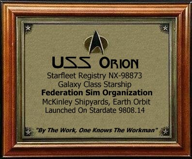

Ship Information

Basic Facts
Ship Name: USS Orion
Starfleet Registry: NX-98873
Class: Galaxy
Type: Heavy Cruiser
Constructed: McKinley Shipyards, in Earth Orbit.
Launch Date: Stardate 9808.14 (May 19, 2408)
Motto: "By the work one knows the workman." -Jean De La Fontaine
Length: 704 meters
Width: 392 meters
Height: 163 meters
Decks: 45 decks
Crew Compliment: 1374
Propulsion Systems
Thrusters: Reaction Control Thrusters located in 20 sections of the ship.
Sublight: Hyperdrive Mark III Impulse Engines
Warp Propulsion: 2 Warp Cores (1 for backup) capable of Warp 9.99999.
NOTE: The Saucer Section is also capable of Warp Flight, but can only maintain Warp 6 for 5 days.
Quantum Slip Stream: 1 Quantum Slip Stream Core, capable of Warp 10 in Quantum Slip Stream.
Defensive Systems
Shields:
- Multi Layer Shields
- Metaphasic Shields
- Standard Rotating Modulation Shields
- Class XXII Temporal Shielding
Phasers: Automatically Change Frequecies
- 3 Sets Pulse Phasers
- Sides Deflector Dish
- Rear of Warp Nacelles
- Top of Saucer Section
- 20 Type XVI Phaser Banks.
Disruptors:4 Disrupter Cannons, 2 on Stardrive, 2 on Saucer.
Torpedoes: 4 Torpedo Bays
- 700 Photon Torpedoes
- 600 Quantum Torpedoes
- 300 Electromagnetic Pulse Torpedoes
- 200 Sonic Torpedoes
Cloak: Type III Phase Cloak
Armor: Ablative Armor Matrix
Auxiliary Spacecraft
The USS Orion is equipped with 3 Shuttlebays, 1 large bay in the saucer section and 2 smaller ones in the Stardrive. The Orion's Shuttlecraft include:
- 10 Type VII Shuttles
- 15 Type VIII Shuttles
- 20 Type IX Warp Shuttles
- 20 Type XII Warp Shuttles
Other Craft Include:
- The Captain's Yacht
- 5 Yosemite Class Runabouts
- 10 Workbees
Science Systems
Probes: The Orion is equipped with many different types of probes.
- 100 Class I Sensor Probes
- 100 Class II Sensor Probes
- 90 Class III Planetary Probes
- 85 Class IV Stellar Encounter Probes
- 80 Class V Medium-Range Reconnaissance Probes
- 80 Class VI Comm Relay/Emergency Beacon Probes
- 75 Class VII Remote Culture Study Probes
- 70 Class VIII Medium-Range Multimission Warp Probes
- 70 Class IX Long-Range Multimission Warp Probes
- 50 Class X Extreme-Range Multimission Transwarp Probes
Sensors: Sensor pallets located on vehicle sides and several other key places.
Medical Systems
Sickbay: 3 Sickbay Areas
- 2 Sickbays in Saucer Section on Deck 12, one in Stardrive on deck 32.
- Starboard Saucer Sickbay has a nursery, physical therapy facility, null-gravity ward, and dental office adjacent to the Sickbay.
Emergency Medical Holographic Program: 3 Mark V EMH's
- One EMH assigned to each sickbay area.
- Holoemitters on all decks & sections allow EMH's access to any part of the ship.
- Each EMH is fully capable of operation without Human Counterparts for as long as necessary.
Other Systems
Crew Quarters: Each person is assigned 110 square meters of living space, including a bedroom, living/work area and a small bathroom.
Escape Pods: 450 Autonomous Survival & Recovery Vehicles (ASRV)
- Capable of a rapid departure from the ship at a minimum of 40 meters per second
- Life Support can be sustained for 80 days with 8 people aboard.
- Subspace radio signaling for location and recovery.
- Can enter an atmosphere and land on a planet.
- Capable of Docking with other ASRVs.
Transporters: 20 Transporter Rooms, each capable of transporting via subspace.
Tractor Beams: Tractor Emitters located in 18 key spots on the Outer hull.
Hull: Hull is made primarily of a Quadtanium/Tritanium Alloy.
Separated Flight Mode: The USS Orion can separate into 2 ships.
- Stardrive & Saucer both capable of Warp Flight.
- Stardrive & Saucer have weapons.
- Saucer section can crash-land on a planet
- Stardrive has 5 hover pads, enabling it to land on a planetary surface intact, and lift off and return to space.

These Specs and the Dedication Plaque were made by me. Please do not use them without my permission!
Hit The Button Below To Open Hailing Frequencies